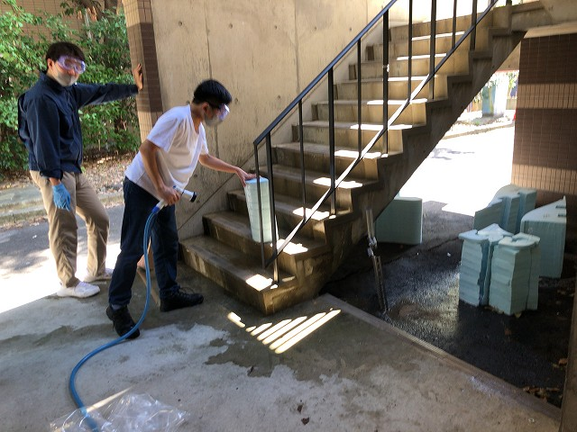
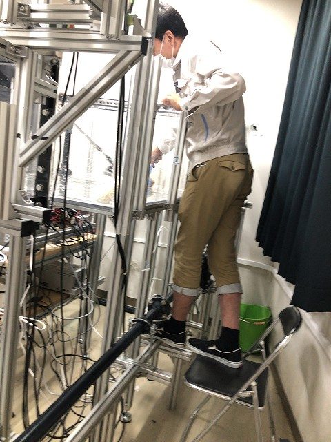

恒例の回流水槽の掃除。去年はコロナでそもそも稼働率低くて掃除ありませんでした。おととし以来になります。移設の際に設置を見直したりして、10号館に戻ったときはいろいろ改善を反映させます。
水遊びにちょうど良い天気
洗浄待ち
階段がちょうど良い
びしゃー
完全に水を拭き取る
窓から隙間を広くとって設置したので作業がラク
洗い終わりのハニカム
びしゃー

あと少し
天気良い
| ・ 回流水槽清掃 (R03.08.05) | |||
恒例の回流水槽の掃除。去年はコロナでそもそも稼働率低くて掃除ありませんでした。おととし以来になります。移設の際に設置を見直したりして、10号館に戻ったときはいろいろ改善を反映させます。 |
|||
|
水遊びにちょうど良い天気 |
洗浄待ち | ||
|

階段がちょうど良い |
びしゃー | ||
|
完全に水を拭き取る |

窓から隙間を広くとって設置したので作業がラク | ||
|
洗い終わりのハニカム |
びしゃー | ||
|
あと少し |
天気良い | ||